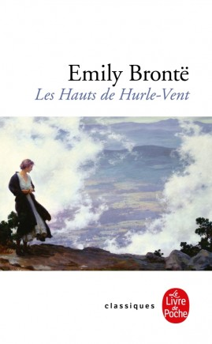
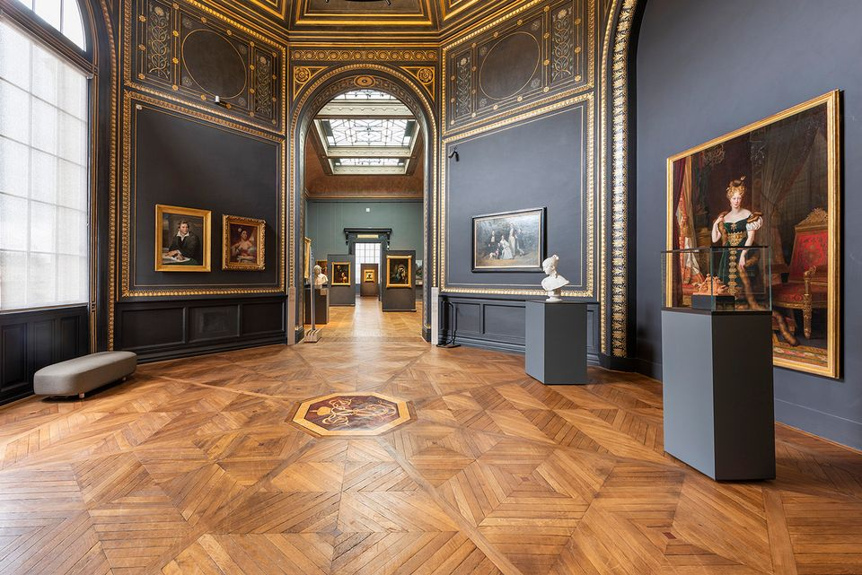

Mes centres d'intérêts
Lecture: romans
Protection du bien-être animal
Pratique sportive:
Équitation (galop 3), badminton dans une association sportive, course à pieds
Visites culturelles
Cuisine
RETOUR